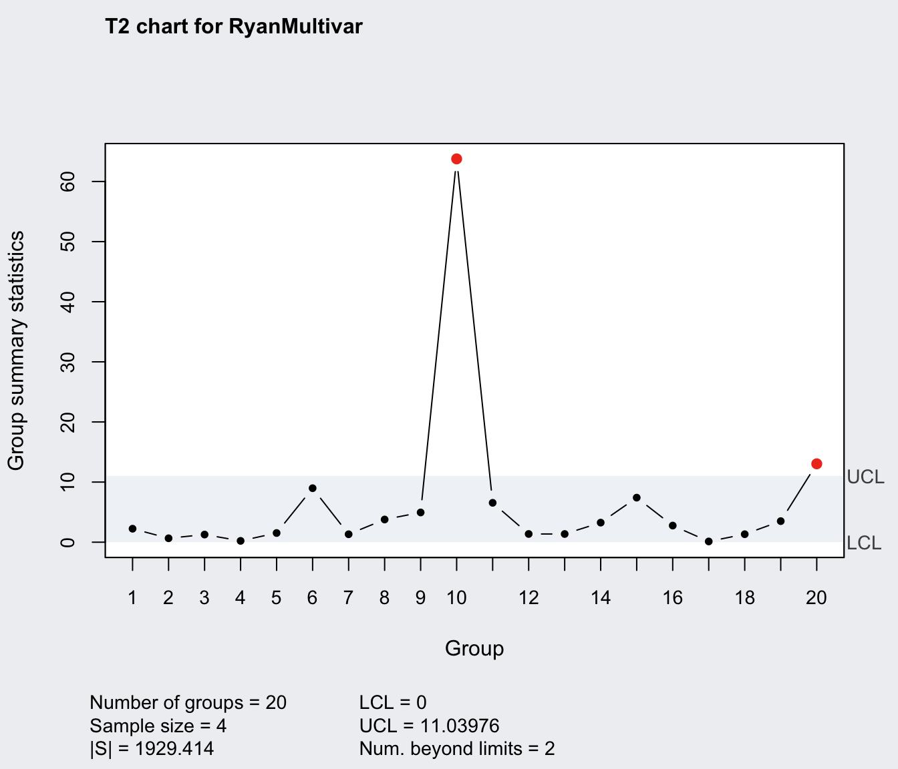
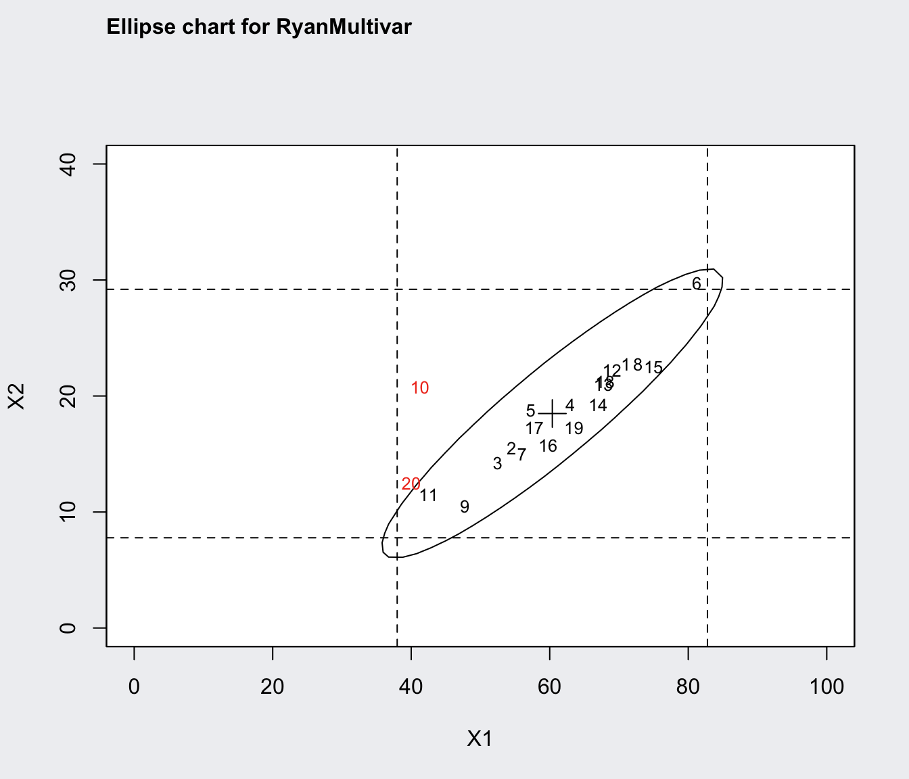
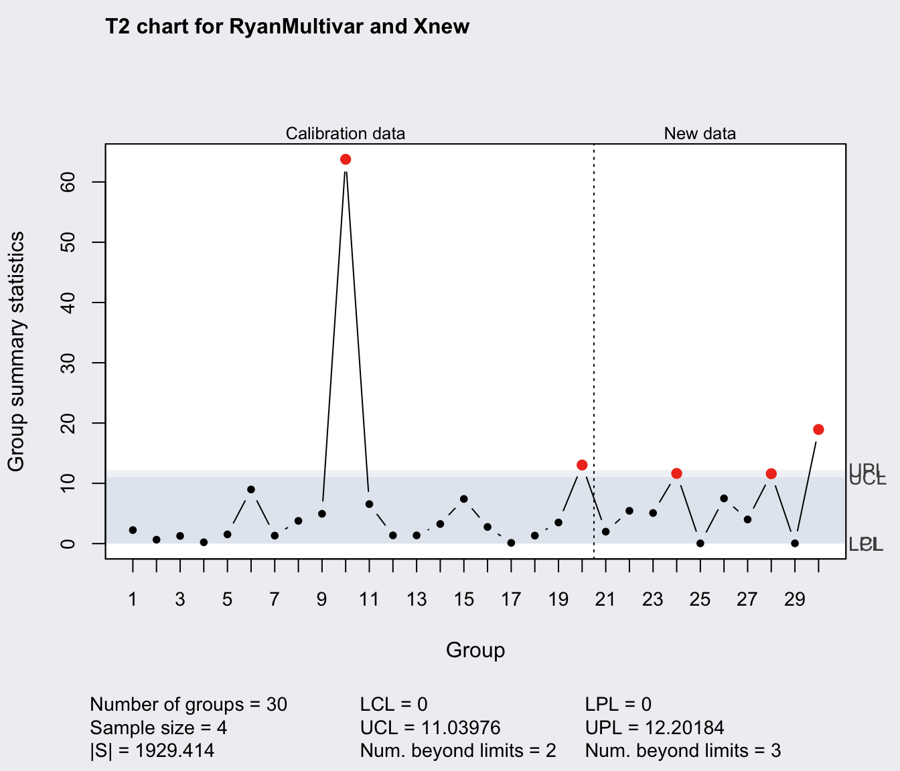

Multivariate Quality Control Charts
mqcc.RdCreate an object of class 'mqcc' to perform multivariate statistical quality control.
mqcc(data, type = c("T2", "T2.single"), center, cov,
limits = TRUE, pred.limits = FALSE,
data.name, labels, newdata, newlabels,
confidence.level = (1 - 0.0027)^p,
rules = shewhart.rules,
plot = TRUE, …)
# S3 method for mqcc
print(x, digits = getOption("digits"), …)
# S3 method for mqcc
plot(x,
add.stats = qcc.options("add.stats"),
chart.all = qcc.options("chart.all"),
label.limits = c("LCL", "UCL"),
label.pred.limits = c("LPL", "UPL"),
title, xlab, ylab, ylim, axes.las = 0,
digits = getOption("digits"),
restore.par = TRUE, …)
Arguments
| data | For subgrouped data, a list with a data frame or a matrix for each variable to monitor. Each row of the data frame or matrix refers to a sample or ''rationale'' group. For individual observations, where each sample has a single observation, users can provide a list with a data frame or a matrix having a single column, or a data frame or a matrix where each rows refer to samples and columns to variables. See examples. |
||||||||||||||||
|---|---|---|---|---|---|---|---|---|---|---|---|---|---|---|---|---|---|
| type | a character string specifying the type of chart:
|
||||||||||||||||
| center | a vector of values to use for center of input variables. |
||||||||||||||||
| cov | a matrix of values to use for the covariance matrix of input variables. |
||||||||||||||||
| limits | a logical indicating if control limits (Phase I) must be computed (by default using |
||||||||||||||||
| pred.limits | a logical indicating if prediction limits (Phase II) must be computed (by default using |
||||||||||||||||
| data.name | a string specifying the name of the variable which appears on the plots. If not provided is taken from the object given as data. |
||||||||||||||||
| labels | a character vector of labels for each group. |
||||||||||||||||
| newdata | a data frame, matrix or vector, as for the |
||||||||||||||||
| newlabels | a character vector of labels for each new group defined in the argument |
||||||||||||||||
| confidence.level | a numeric value between 0 and 1 specifying the confidence level of the computed probability limits. By default is set at \((1 - 0.0027)^p\) where \(p\) is the number of variables, and \(0.0027\) is the probability of Type I error for a single Shewhart chart at the usual 3-sigma control level. |
||||||||||||||||
| rules | a function of rules to apply to the chart. By default, the |
||||||||||||||||
| plot | logical. If |
||||||||||||||||
| add.stats | a logical value indicating whether statistics and other information should be printed at the bottom of the chart. |
||||||||||||||||
| chart.all | a logical value indicating whether both statistics for |
||||||||||||||||
| label.limits | a character vector specifying the labels for control limits (Phase I). |
||||||||||||||||
| label.pred.limits | a character vector specifying the labels for prediction control limits (Phase II). |
||||||||||||||||
| title | a string giving the label for the main title. |
||||||||||||||||
| xlab | a string giving the label for the x-axis. |
||||||||||||||||
| ylab | a string giving the label for the y-axis. |
||||||||||||||||
| ylim | a numeric vector specifying the limits for the y-axis. |
||||||||||||||||
| axes.las | numeric in {0,1,2,3} specifying the style of axis labels. See |
||||||||||||||||
| digits | the number of significant digits to use when |
||||||||||||||||
| restore.par | a logical value indicating whether the previous |
||||||||||||||||
| x | an object of class |
||||||||||||||||
| … | additional arguments to be passed to the generic function. |
Value
Returns an object of class 'mqcc'.
References
Mason, R.L. and Young, J.C. (2002) Multivariate Statistical Process Control with Industrial Applications, SIAM.
Montgomery, D.C. (2005) Introduction to Statistical Quality Control, 5th ed. New York: John Wiley & Sons.
Ryan, T. P. (2011), Statistical Methods for Quality Improvement, 3rd ed. New York: John Wiley & Sons, Inc.
Scrucca, L. (2004). qcc: an R package for quality control charting and statistical process control. R News 4/1, 11-17.
Wetherill, G.B. and Brown, D.W. (1991) Statistical Process Control. New York: Chapman & Hall.
See also
Examples
summary(q)#> #> Call: #> mqcc(data = RyanMultivar, type = "T2") #> #> T2 chart for RyanMultivar #> #> Summary of group statistics: #> Min. 1st Qu. Median Mean 3rd Qu. Max. #> 0.12429 1.32496 2.50272 6.47013 5.34912 63.76042 #> #> Number of variables: 2 #> Number of groups: 20 #> Group sample size: 4 #> #> Center: #> X1 X2 #> 60.3750 18.4875 #> #> Covariance matrix: #> X1 X2 #> X1 222.0333 103.11667 #> X2 103.1167 56.57917 #> |S|: 1929.414 #> #> Control limits: #> LCL UCL #> 0 11.03976ellipseChart(q)q <- mqcc(RyanMultivar, type = "T2", pred.limits = TRUE)# Xbar-charts for single variables computed adjusting the # confidence level of the T^2 chart: q1 <- with(RyanMultivar, qcc(X1, type = "xbar", confidence.level = q$confidence.level^(1/2)))summary(q1)#> ── Quality Control Chart ───────────────────────── #> #> Chart type = xbar #> Data (phase I) = X1 #> Number of groups = 20 #> Group sample size = 4 #> Center of group statistics = 60.375 #> Standard deviation = 14.93443 #> #> Control limits at nsigmas = 2.999977 #> LCL UCL #> 37.97352 82.77648summary(q2)#> ── Quality Control Chart ───────────────────────── #> #> Chart type = xbar #> Data (phase I) = X2 #> Number of groups = 20 #> Group sample size = 4 #> Center of group statistics = 18.4875 #> Standard deviation = 7.139388 #> #> Control limits at nsigmas = 2.999977 #> LCL UCL #> 7.7785 29.1965require(MASS)#># generate new "in control" data Xnew <- list(X1 = matrix(NA, 10, 4), X2 = matrix(NA, 10, 4)) for(i in 1:4) { x <- mvrnorm(10, mu = q$center, Sigma = q$cov) Xnew$X1[,i] <- x[,1] Xnew$X2[,i] <- x[,2] } qq <- mqcc(RyanMultivar, type = "T2", newdata = Xnew, pred.limits = TRUE)summary(qq)#> #> Call: #> mqcc(data = RyanMultivar, type = "T2", pred.limits = TRUE, newdata = Xnew) #> #> T2 chart for RyanMultivar #> #> Summary of group statistics: #> Min. 1st Qu. Median Mean 3rd Qu. Max. #> 0.12429 1.32496 2.50272 6.47013 5.34912 63.76042 #> #> Number of variables: 2 #> Number of groups: 20 #> Group sample size: 4 #> #> Center: #> X1 X2 #> 60.3750 18.4875 #> #> Covariance matrix: #> X1 X2 #> X1 222.0333 103.11667 #> X2 103.1167 56.57917 #> |S|: 1929.414 #> #> Summary of group statistics in Xnew: #> Min. 1st Qu. Median Mean 3rd Qu. Max. #> 0.013407 0.449828 1.106323 2.168943 3.891007 6.008850 #> #> Number of groups: 10 #> Group sample size: 4 #> #> Control limits: #> LCL UCL #> 0 11.03976 #> #> Prediction limits: #> LPL UPL #> 0 12.20184# generate new "out of control" data Xnew <- list(X1 = matrix(NA, 10, 4), X2 = matrix(NA, 10, 4)) for(i in 1:4) { x <- mvrnorm(10, mu = 1.2*q$center, Sigma = q$cov) Xnew$X1[,i] <- x[,1] Xnew$X2[,i] <- x[,2] } qq <- mqcc(RyanMultivar, type = "T2", newdata = Xnew, pred.limits = TRUE)summary(qq)#> #> Call: #> mqcc(data = RyanMultivar, type = "T2", pred.limits = TRUE, newdata = Xnew) #> #> T2 chart for RyanMultivar #> #> Summary of group statistics: #> Min. 1st Qu. Median Mean 3rd Qu. Max. #> 0.12429 1.32496 2.50272 6.47013 5.34912 63.76042 #> #> Number of variables: 2 #> Number of groups: 20 #> Group sample size: 4 #> #> Center: #> X1 X2 #> 60.3750 18.4875 #> #> Covariance matrix: #> X1 X2 #> X1 222.0333 103.11667 #> X2 103.1167 56.57917 #> |S|: 1929.414 #> #> Summary of group statistics in Xnew: #> Min. 1st Qu. Median Mean 3rd Qu. Max. #> 0.042583 2.486922 5.258719 6.625778 10.572023 18.934427 #> #> Number of groups: 10 #> Group sample size: 4 #> #> Control limits: #> LCL UCL #> 0 11.03976 #> #> Prediction limits: #> LPL UPL #> 0 12.20184## ## Individual observations data ## data(boiler) q <- mqcc(boiler, type = "T2.single", confidence.level = 0.999)summary(q)#> #> Call: #> mqcc(data = boiler, type = "T2.single", confidence.level = 0.999) #> #> T2.single chart for boiler #> #> Summary of group statistics: #> Min. 1st Qu. Median Mean 3rd Qu. Max. #> 1.316342 5.305689 7.074224 7.680000 9.775744 17.575293 #> #> Number of variables: 8 #> Number of groups: 25 #> Group sample size: 1 #> #> Center: #> t1 t2 t3 t4 t5 t6 t7 t8 #> 525.00 513.56 538.92 521.68 503.80 512.44 478.72 477.24 #> #> Covariance matrix: #> t1 t2 t3 t4 t5 t6 t7 #> t1 54.0000000 0.9583333 20.583333 31.2916667 20.3333333 -2.2916667 20.3750000 #> t2 0.9583333 4.8400000 2.963333 2.6866667 0.3250000 3.0766667 0.7050000 #> t3 20.5833333 2.9633333 22.993333 10.0566667 4.9833333 2.0366667 6.4766667 #> t4 31.2916667 2.6866667 10.056667 22.3100000 13.5583333 -2.2700000 12.6983333 #> t5 20.3333333 0.3250000 4.983333 13.5583333 11.4166667 -1.6583333 10.6500000 #> t6 -2.2916667 3.0766667 2.036667 -2.2700000 -1.6583333 4.5066667 -0.7466667 #> t7 20.3750000 0.7050000 6.476667 12.6983333 10.6500000 -0.7466667 11.6266667 #> t8 0.2083333 3.4433333 2.770000 0.1633333 -0.2833333 3.7233333 0.5283333 #> t8 #> t1 0.2083333 #> t2 3.4433333 #> t3 2.7700000 #> t4 0.1633333 #> t5 -0.2833333 #> t6 3.7233333 #> t7 0.5283333 #> t8 3.8566667 #> |S|: 8313.241 #> #> Control limits: #> LCL UCL #> 0 17.41705# generate new "in control" data boilerNew <- mvrnorm(10, mu = q$center, Sigma = q$cov) qq <- mqcc(boiler, type = "T2.single", confidence.level = 0.999, newdata = boilerNew, pred.limits = TRUE)summary(qq)#> #> Call: #> mqcc(data = boiler, type = "T2.single", pred.limits = TRUE, newdata = boilerNew, confidence.level = 0.999) #> #> T2.single chart for boiler #> #> Summary of group statistics: #> Min. 1st Qu. Median Mean 3rd Qu. Max. #> 1.316342 5.305689 7.074224 7.680000 9.775744 17.575293 #> #> Number of variables: 8 #> Number of groups: 25 #> Group sample size: 1 #> #> Center: #> t1 t2 t3 t4 t5 t6 t7 t8 #> 525.00 513.56 538.92 521.68 503.80 512.44 478.72 477.24 #> #> Covariance matrix: #> t1 t2 t3 t4 t5 t6 t7 #> t1 54.0000000 0.9583333 20.583333 31.2916667 20.3333333 -2.2916667 20.3750000 #> t2 0.9583333 4.8400000 2.963333 2.6866667 0.3250000 3.0766667 0.7050000 #> t3 20.5833333 2.9633333 22.993333 10.0566667 4.9833333 2.0366667 6.4766667 #> t4 31.2916667 2.6866667 10.056667 22.3100000 13.5583333 -2.2700000 12.6983333 #> t5 20.3333333 0.3250000 4.983333 13.5583333 11.4166667 -1.6583333 10.6500000 #> t6 -2.2916667 3.0766667 2.036667 -2.2700000 -1.6583333 4.5066667 -0.7466667 #> t7 20.3750000 0.7050000 6.476667 12.6983333 10.6500000 -0.7466667 11.6266667 #> t8 0.2083333 3.4433333 2.770000 0.1633333 -0.2833333 3.7233333 0.5283333 #> t8 #> t1 0.2083333 #> t2 3.4433333 #> t3 2.7700000 #> t4 0.1633333 #> t5 -0.2833333 #> t6 3.7233333 #> t7 0.5283333 #> t8 3.8566667 #> |S|: 8313.241 #> #> Summary of group statistics in boilerNew: #> Min. 1st Qu. Median Mean 3rd Qu. Max. #> 2.576899 4.670197 6.762225 7.465524 9.897281 13.756417 #> #> Number of groups: 10 #> Group sample size: 1 #> #> Control limits: #> LCL UCL #> 0 17.41705 #> #> Prediction limits: #> LPL UPL #> 0 70.02943# generate new "out of control" data boilerNew <- mvrnorm(10, mu = 1.01*q$center, Sigma = q$cov) qq <- mqcc(boiler, type = "T2.single", confidence.level = 0.999, newdata = boilerNew, pred.limits = TRUE)summary(qq)#> #> Call: #> mqcc(data = boiler, type = "T2.single", pred.limits = TRUE, newdata = boilerNew, confidence.level = 0.999) #> #> T2.single chart for boiler #> #> Summary of group statistics: #> Min. 1st Qu. Median Mean 3rd Qu. Max. #> 1.316342 5.305689 7.074224 7.680000 9.775744 17.575293 #> #> Number of variables: 8 #> Number of groups: 25 #> Group sample size: 1 #> #> Center: #> t1 t2 t3 t4 t5 t6 t7 t8 #> 525.00 513.56 538.92 521.68 503.80 512.44 478.72 477.24 #> #> Covariance matrix: #> t1 t2 t3 t4 t5 t6 t7 #> t1 54.0000000 0.9583333 20.583333 31.2916667 20.3333333 -2.2916667 20.3750000 #> t2 0.9583333 4.8400000 2.963333 2.6866667 0.3250000 3.0766667 0.7050000 #> t3 20.5833333 2.9633333 22.993333 10.0566667 4.9833333 2.0366667 6.4766667 #> t4 31.2916667 2.6866667 10.056667 22.3100000 13.5583333 -2.2700000 12.6983333 #> t5 20.3333333 0.3250000 4.983333 13.5583333 11.4166667 -1.6583333 10.6500000 #> t6 -2.2916667 3.0766667 2.036667 -2.2700000 -1.6583333 4.5066667 -0.7466667 #> t7 20.3750000 0.7050000 6.476667 12.6983333 10.6500000 -0.7466667 11.6266667 #> t8 0.2083333 3.4433333 2.770000 0.1633333 -0.2833333 3.7233333 0.5283333 #> t8 #> t1 0.2083333 #> t2 3.4433333 #> t3 2.7700000 #> t4 0.1633333 #> t5 -0.2833333 #> t6 3.7233333 #> t7 0.5283333 #> t8 3.8566667 #> |S|: 8313.241 #> #> Summary of group statistics in boilerNew: #> Min. 1st Qu. Median Mean 3rd Qu. Max. #> 9.503089 21.646538 23.445307 22.998685 25.757985 29.987919 #> #> Number of groups: 10 #> Group sample size: 1 #> #> Control limits: #> LCL UCL #> 0 17.41705 #> #> Prediction limits: #> LPL UPL #> 0 70.02943# provides "robust" estimates of means and covariance matrix rob <- cov.rob(boiler) qrob <- mqcc(boiler, type = "T2.single", center = rob$center, cov = rob$cov)summary(qrob)#> #> Call: #> mqcc(data = boiler, type = "T2.single", center = rob$center, cov = rob$cov) #> #> T2.single chart for boiler #> #> Summary of group statistics: #> Min. 1st Qu. Median Mean 3rd Qu. Max. #> 1.22108 6.41643 8.44007 15.88800 13.83243 92.63632 #> #> Number of variables: 8 #> Number of groups: 25 #> Group sample size: 1 #> #> Center: #> t1 t2 t3 t4 t5 t6 t7 t8 #> 524.8947 514.2632 539.9474 522.1053 503.7895 512.6316 478.8947 477.6316 #> #> Covariance matrix: #> t1 t2 t3 t4 t5 t6 t7 #> t1 52.8771930 -0.1929825 27.494152 27.8450292 17.476608 -1.485380 18.9883041 #> t2 -0.1929825 2.7602339 1.736842 0.5818713 -1.219298 1.991228 -1.4152047 #> t3 27.4941520 1.7368421 19.941520 13.0614035 6.321637 1.868421 7.2719298 #> t4 27.8450292 0.5818713 13.061404 17.7660819 10.967836 -2.292398 10.4005848 #> t5 17.4766082 -1.2192982 6.321637 10.9678363 9.730994 -2.526316 9.1432749 #> t6 -1.4853801 1.9912281 1.868421 -2.2923977 -2.526316 3.356725 -1.9298246 #> t7 18.9883041 -1.4152047 7.271930 10.4005848 9.143275 -1.929825 10.4327485 #> t8 0.5146199 2.1023392 2.201754 -0.5701754 -1.026316 2.801170 -0.4853801 #> t8 #> t1 0.5146199 #> t2 2.1023392 #> t3 2.2017544 #> t4 -0.5701754 #> t5 -1.0263158 #> t6 2.8011696 #> t7 -0.4853801 #> t8 2.9122807 #> |S|: 332.144 #> #> Control limits: #> LCL UCL #> 0 14.26225